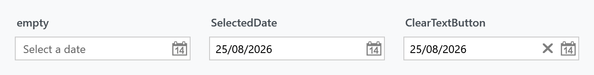
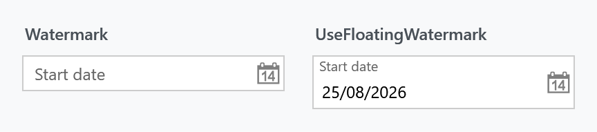
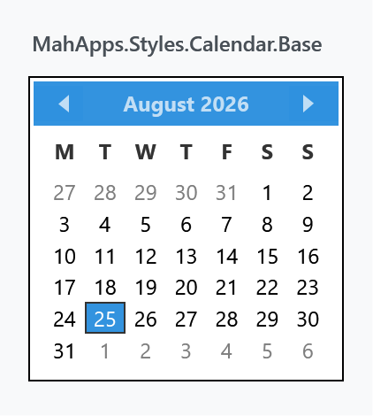

Every DatePicker in a MahApps application is styled without any markup on your side, and so is the calendar that drops out of it. On top of that the library adds a watermark and a clear button, both through the same attached properties a TextBox uses.

The implicit style
Styles/Controls.xaml contains keyless styles for DatePicker, DatePickerTextBox and Calendar. Merging that dictionary — which the quick start does — is all it takes:
<ResourceDictionary Source="pack://application:,,,/MahApps.Metro;component/Styles/Controls.xaml" />
Three of them are needed because a DatePicker is three controls: the picker itself, the DatePickerTextBox inside it, and the Calendar in the drop-down.
To extend rather than replace, base your own style on the keyed one:
<Style BasedOn="{StaticResource MahApps.Styles.DatePicker}" TargetType="{x:Type DatePicker}">
<Setter Property="mah:TextBoxHelper.ClearTextButton" Value="True" />
</Style>
The styles
| Style | Target | |
|---|---|---|
MahApps.Styles.DatePicker |
DatePicker |
the picker. What the implicit style applies |
MahApps.Styles.DatePickerTextBox |
DatePickerTextBox |
the text box inside it |
MahApps.Styles.DatePickerTextBox.TimePickerBase |
DatePickerTextBox |
the same, used by TimePicker and DateTimePicker; it only forwards the automation properties from the picker to the box |
Besides the look, the picker style also sets three behavioural defaults you may want to change: SelectedDateFormat to Short, IsTodayHighlighted to True, and CalendarStyle to MahApps.Styles.Calendar.Base.
The clear button
ClearTextButton puts an ✕ next to the calendar button, which empties the picker.
<DatePicker mah:TextBoxHelper.ClearTextButton="True" />
The mechanism is worth knowing, because it is not the one the other input controls use. The button is in the template unconditionally, and a trigger collapses it while TextBoxHelper.ButtonCommand is null — which it is by default. Setting ClearTextButton="True" fires a second trigger that puts MahAppsCommands.ClearControlCommand into ButtonCommand, and that is what brings the button back.
Two things follow from that:
- Setting your own
ButtonCommandalso makes the button appear, and it replaces the clearing rather than adding to it. That is the way to turn the ✕ into something else — a "today" button, for instance. ClearControlCommandrefuses to run unlessClearTextButtonisTrueand the picker is not read-only, so the button is disabled rather than misleading in those cases.
The command is public and works on more than a picker — it clears a TextBox, ComboBox or TimePicker the same way, and can be invoked from anywhere:
<Button Command="{x:Static mah:MahAppsCommands.ClearControlCommand}"
CommandTarget="{Binding ElementName=StartDate}"
Content="Clear" />
Watermark
WPF's own DatePickerTextBox shows Select a date when it is empty. TextBoxHelper.Watermark replaces that with your own text, and the floating variant keeps it visible once a date has been picked:

<DatePicker mah:TextBoxHelper.Watermark="Start date" />
<DatePicker mah:TextBoxHelper.Watermark="Start date"
mah:TextBoxHelper.UseFloatingWatermark="True" />
The calendar
The drop-down is an ordinary Calendar, styled through the picker's CalendarStyle. Three calendar styles ship with the library:
| Style | |
|---|---|
MahApps.Styles.Calendar.Base |
what a DatePicker uses in its drop-down |
MahApps.Styles.Calendar |
the same plus the control font and size; what a standalone Calendar gets from the implicit style |
MahApps.Styles.Calendar.DateTimePicker |
the base with a quieter border, for the drop-down of a DateTimePicker |

All three build on MahApps.Styles.CalendarItem, MahApps.Styles.CalendarDayButton and MahApps.Styles.CalendarButton, which is where the individual days, the month and year buttons and the header live. Restyling one day cell means replacing CalendarDayButtonStyle rather than the whole calendar.
<DatePicker CalendarStyle="{StaticResource MyCalendar}" />
Helper properties
Three helpers reach a DatePicker, and their full property tables are on their own pages: DatePickerHelper for the drop-down button, TextBoxHelper for the watermark and the clear button, and ControlsHelper for the border, the corner radius and read-only.
What the style itself sets, since those are the values you would be overriding:
| Property | To |
|---|---|
DatePickerHelper.DropDownButtonContent |
the calendar glyph, as Path geometry |
DatePickerHelper.DropDownButtonContentTemplate |
the template that draws that geometry |
TextBoxHelper.IsMonitoring |
True |
TextBoxHelper.ButtonWidth |
22 |
TextBoxHelper.ButtonFontSize |
MahApps.Font.Size.Button.ClearText |
TextBoxHelper.ButtonTemplate |
the chromeless button template |
ControlsHelper.FocusBorderBrush |
MahApps.Brushes.TextBox.Border.Focus |
ControlsHelper.MouseOverBorderBrush |
MahApps.Brushes.TextBox.Border.MouseOver |
ButtonCommand is deliberately absent from that list — it is set by the trigger described above, not by the style.
The drop-down button's content and template are set as a pair, so replacing the calendar icon means dealing with both. DatePickerHelper has the detail.
Read-only
DatePicker has no IsReadOnly of its own. ControlsHelper.IsReadOnly fills the gap: it disables the drop-down button, makes the text box read-only, and stops the clear command from running.
<DatePicker mah:ControlsHelper.IsReadOnly="True" SelectedDate="{Binding StartDate}" />
That leaves the date readable and selectable, which is what a disabled picker does not.
Validation
Validation.ErrorTemplate is set to MahApps.Templates.ValidationError, so a failing validation rule on SelectedDate is drawn the way it is on every other MahApps input control. How the popup behaves is ValidationHelper.
Related
TimePicker and DateTimePicker are MahApps controls of their own rather than styles of a WPF one, and they reuse both the DatePickerTextBox.TimePickerBase style and DatePickerHelper.